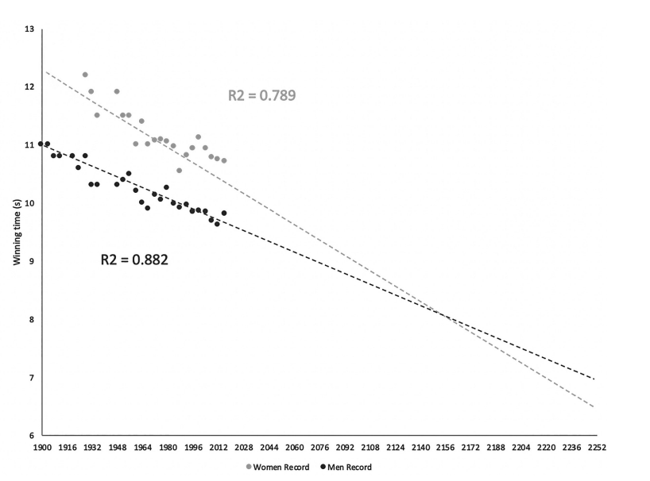

ggplot(data = gapminder,
aes(x = gdpPercap,
y = lifeExp,
color = continent))+
geom_point(alpha=0.3)+
geom_smooth(method = "lm")+
scale_x_log10(breaks=c(1000,10000, 100000),
label=scales::dollar)+
labs(x = "GDP/Capita",
y = "Life Expectancy (Years)")+
facet_wrap(~continent)+
guides(color = F)+
theme_light()Understanding and minimizing nonsense in digital world
Zahid Asghar
Learning…
- You don’t “learn R”, you learn how to do things in R
- In order to do learn this, you need to learn how to search for what you want to do
- Quarto for beautiful documents (pdf, word, html, pptx, revealjs, beamer, website, blogs, book/thesis/reports)
Why R
Free and open source
A very large community
Can handle virtually any data format
Makes replication easy
Can integrate into documents (with
Quarto)R is a language so it can do everything
- A good stepping stone to learning other languages like Python

Excel (or Stata) Can’t Do This
Or This
Or This
Training Outline
Meet R
Data Wrangling
Data Visualization
Learn Having Beautiful Regression Models
Learn to create beautiful documentation in Quarto
Nature News Piece
2156: Women finish time for 100 m in 8.08 seconds while men will finish in 8.10 seconds.
Letter by Prof Rice to Nature : In 2626 a far more interesting : women in less than zero seconds will finish 100 meter rice
Data Reasoning in Digital World
How to refute nonsense/bullshit/false claims
Why our quant courses not very helpful
Each of us create lot of nonsense (irrespective of idealogy, belongings, profession)
Skills for talking bullshit vs Art of Critical Skill
Way forward
Bullshit is not a new phenomenon
Millions of years even among animals
Easy access to information has overloaded access
Paltering vs Lying
Falsehood flies and the truth comes limping after it
Ex-PM conspiracy theory by a powerful country
Truth emerges when perception on bullshit has done its damage.
Alberto Barndonlini in 2014, it states: “The amount of energy need to refule bullshit is an order of magnitude bigger than that needed to produce it.”
Satirist Jonathan Swift wrote in 1710 that “that falsehood flies, and truth comes limping after it.”
FD Roosevelts’ secretary of state, Cordell Hull: “A lies will gallop halfway round the world before the truth has come to pull its breeches on.”
Why lot of nonsense/bullshit
Bullshit (Brandolini, Franelli and Swifts taken together)is
bullshit takes less work to create that to clean up.
takes less intelligence to create than to clean up, and
spreads faster than efforts to clean it up.
What new quantitative reasoning practice might arise with the use of new technological capabilities for exploring quantities?
Consider the use of digital tools for:
accessing the meaningful data
visualizing data
creating models and simulations of phenomena,
interacting with quantitities using multi-touch environments and gestures.
Accessing Meaningful Data
Engage directly with the context of a task– not contrived! Posing your own questions.
Large Messy data – understand its structure and how to process it!
Access to new tools to answer
trusting data sources
Visualizing data
Chopal/Baithak Gupshup and Face the Nation to Facebook
Social media provides a fertilizer for the rapid proliferation of distractions, misinformation, bullshit, and fake news.
No time but smartphone to spread bullshit
Positive: easy to fact check but why bullshit goes unchecked
Brothel of printing press
Anything can be produced if one has personal computer and internet
The inadequacy of the unvarnished truth
Mindless lists , quizzes, memes, and celebrity gossip that proliferate media might crowd out careful analyses of the sort one sees in responsible media.
Prior to internet, large publishers cared about content and quality
Headlines for retention not for information
Algorithms make things even worse. They are not designed to keep you informed but to keep you engaged.
Being careful is admirable but it does not sell ads. Social media is fertile ground for disinformation.
Tech entrepreneur Jeff Hammerbacher (Allen Ginsberg) complained in 2011 that “The best minds of my generation are thinking about how to make people click ads. That sucks.” Sophisticated ways to diverge our attention from real issues.
Misinformation and Disinformation
December 2016, a website called AWD News published a frightening headline:
“Israeli Defense Minister: If Pakistan Send Ground Troops to Syria on Any Pretext, We Will Destroy the Country With Nuclear Attack.”
Story made a big headline and it named the wrong person as the Israeli Defense Minister.
Khawaja M Asif, then Pak Def Min via twitter responded
“Israeli def min threatens nuclear retaliation presuming pak role in Syria against Daesh…Israel forgets Pakistan is a Nuclear state too.”
Think more share less
Social media: firehouse strategy, our trust in friends and institutions erode.
Gary Kasprov summarized this approach in a post on Twitter: “The point of modern propaganda isn’t only to misinform or push an agenda, It is to exhaust your critical thinking, to annihilate truth.”
Approaches for protecting ourselves against misinformation
Technology: AI technology to detect fake news
Government regulations
Most powerful approach is education. If we do a good job of educating people in media literacy and critical thinking, the problem of misinformation and disinformation can be solved from the bottom up.
- Due to internet bullshit spreads more easily in a massively networked, click-driven social media world than in any previous social environment. (Friends, Uncle, Small advertisement gatherings on roadside)
The Nature of Bullshit
Persuasive vs evasive
Bullshit and Black Boxes
Cat people earn more than dog people, ANCOVA, p-value
Biases, data representation, relevant to the problem
Criminals and Machine Learning
Extraordinary claims require extraordinary evidence
CAUSALITY
Red Sky at Night , Sailor’s delight
“Forget about a baby boom - rising home prices appear to be causing many would-be parents to think twice before expanding their family.” Even the headline suggests causality: “Another Adverse Effect of High Home Prices: Fewer Babies.”
Beer and Pitcher
“Where minimum wage is higher, poverty is lower.” is not the same claim as “If minimum wage were to increase, poverty would decrease.”]{.yellow} The first reports a trend across cities: Those with higher minimum wage have lower poverty rates. The second suggests how one might go about reducing poverty in a particular city.
Numbers and Nonsense
Math \(2+2=4\) Eng \(2+2\approx4\)
Accountant: “Before I put anything in writing,”he says in a lower whisper, “what you want it to be?”
Data can never lie is dangerous perspective, planets story 8, then 9 and now again 8
Summary statistics condense information but if inappropriate, it can be misleading
Percentage not appropriate if negative numbers
Biases
Confirmatory Bias
Confirmation bias is the tendency to notice, believe, and share information that is consistent with our preexisting beliefs.
Selection Bias
Desirability Bias
Bandwagon Effect Bias
People who are in good health are more likely to participate in wellness program. Its not wellness program cause good health.
The Hidden Cause of Murphy’s Law
In Portugal: 60% of families with children have only one child, but 60% of children have siblings.
Visualization
Edward Tufte : While aesthetics are important, data graphics should be about the data, not about eye-catching. Graphs that violate this principle are called “ducks”.
Axis of evil
Ch 9 The Susceptibility of Science
Science is humanity’s great invention
13.7 billion years ago big bag
Not ultimate reality Science is haphazard collection of institutions, norms, customs, and traditions that have developed by trial and error over the past several centuries.
Academicians’ science for prestige and on twitter and social media while industrial science is concerned with output. Rewarding prestige instead of direct output is a wonderful trick for allowing a broad community of researchers to work together efficiently with minimal disruption of effort.
Replication crisis begain in 21 century often fraud or incompentency
- 5/53 cancer studies reproducible
- 39/100 in social psychology
- 1/18 in experimental economics
The Prosecutor’s Fallacy
“There is absolutely no chance of getting a fingerprint match this good simply by accident.” Is it different than “No, we want to know what chance there is that my client is innocent given that we’ve got a match.”
P(Match/innocent) \(\neq\) P(innocent/match)
P-value used by scientists is often like an innocent person match the fingerprint from the crime.
A p-value describes the probability of getting data at least as extreme as those observed, if the null hypothesis were true.
P-Kaching and Publication Bias
Significant results over-reported than non-significant results
“These two groups don’t differ”, “This treatment doesn’t change the outcome”, “Knowing x does not help us predict y.” Reading all this implies like we are right back where we started.
Often nudge their p-value across that critical p=0.05
How to avoid pitfall : Specify your hypothesis before analyze data, otherwise torturing data enough will submit it to nature
1000 researchers 1000 hypothesis about relationship between political victories and analgesic use, all of which are fale. 50 lucky winners will rite up their results.
Biased Sample
File drawer effect
Why most published research findings are false.
Base rate fallacy
Clickbait Science
General public often skeptical
The market for Bullshit Science
Goodhart’s law :“What a measure becomes a target, it ceased to be a good measure.
Parasites on the scientific publishing system, sucking tens of million of dollars from the academic system and polluting the literature with millions of unreliable articles. Web design and fraud Spam email: We congratulate you on this excellent work. If you have an additional research in this area, we would urge you to consider our journal for next publication….”
Image from Google docs notes
Spotting Bullshit
Bullshit spotting requires care (walking at night)
1. Question the source of information
- who is telling me this?
- How does he or she know it?
- What is this person trying to sell me?